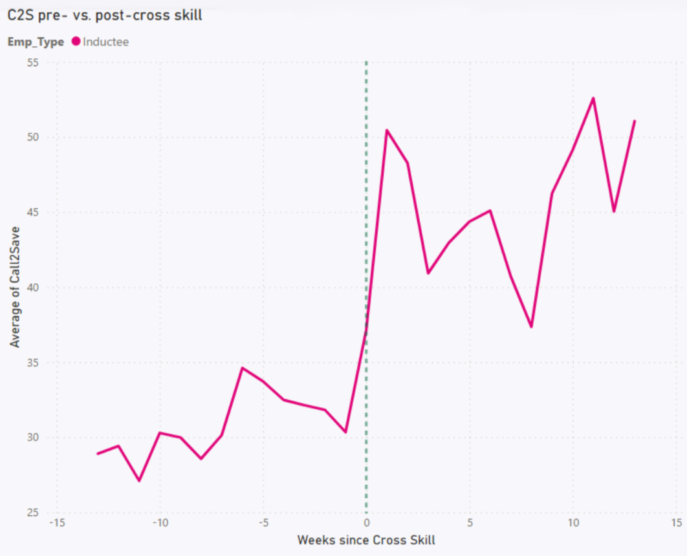

Finally, an answer.
How I joined nine datasets from three enterprise systems, analysed 1.2 million records, and connected learning interventions to employee performance for the first time.
Date: 2023
For years, the Learning & Development team evaluated training through engagement rates and user feedback. Both are useful. Neither tells you whether the training changed anything.
For my final Level 4 Data Analyst Apprenticeship project, I set out to answer the question properly. That meant accessing data that L&D had never touched, building relationships across HR, operations, and a data teams, and engineering a dataset complex enough to track individual employees from their first week through to twelve months in role.
My organisation ran a structured induction programme for all new motor insurance retention consultants. These employees are critical to the business. Marginal improvements in their performance translate directly to revenue.
Despite this, nobody had properly looked at how the induction programme was working. Not because the data didn't exist, but because it lived across three separate enterprise systems that L&D had no access to, no relationships with, and no framework for joining.
The hypothesis was simple: if we can benchmark new inductee performance against experienced staff, and track how that gap closes over time, we can make targeted decisions about training content, timing, and sequencing.
Data sourcing and access: I worked with the Motor Performance team to gain access to trading reports held on our AWS cloud data warehouse – data that L&D had never accessed before. I identified nine source files across three systems (our HRIS, LMS, and trading platform), totalling over 1.2 million records.
The analysis, in brief: After an extensive data engineering phase, I conducted an exploratory analysis of KPIs – call volumes, retention rates, renewals, customer feedback, and quality assurance scores – across four employee populations: new inductees, existing staff, offshore contractors, and onshore contractors. I then categorised employees into four tenure bands, analysing performance and building linear regression models to predict retention rates. Then I investigated the relationship between cross-skill training and performance uplift.
The recommendation: New inductee performance was broadly comparable to experienced staff on most KPIs at around four to six months. Call-to-save – the most commercially significant metric – takes longer, and the data suggests the turning point coincides with a cross-skill training programme typically delivered at six months.
So, does our training work? Yes – but I believe we can make it better. My recommendation: pilot bringing elements of the cross-training forward. Measure the results against the benchmarks established here, and use A/B testing to validate impact.

"The insight we're seeing from your work is adding so much value to how we consider training moving forwards. You have an ability to draw out data comparisons I wouldn't have even thought of."